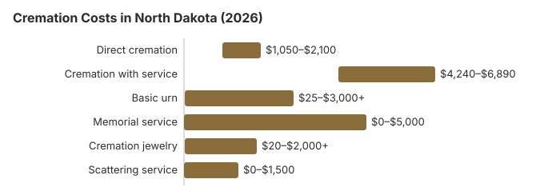

Cremation Costs in North Dakota (2026)
North Dakota direct cremation costs about $1,500 on our estimates, and a funeral and viewing before cremation about $5,300. About 55% of North Dakota deaths end in cremation, 8.4 points under NFDA's 63.4% national projection for 2025. The state sets no waiting period; what it does require is a disposition-transit permit and a signed authorization, and this page also covers shipping rules and the $3,500 human service zone payment.
Cremation Choices Offered in North Dakota
Direct Cremation
- The least costly North Dakota option
- No service beforehand
- Body goes from the hospital or home to the crematory
- Ashes handed back to relatives
- Memorial whenever the family wants
Cremation with Service
- Funeral held, then cremation
- Visitation can be added
- Ceremony in a funeral home or church
- Price normally takes in an urn
- Feels like a conventional funeral
North Dakota Cremation Charges
| Cost item | North Dakota average | Most quotes |
|---|---|---|
| Direct cremation | $1,500 | $1,050 – $2,100 |
| Cremation with service | $5,300 | $4,240 – $6,890 |
| Basic urn | $50 – $300 | $25 – $3,000+ |
| Memorial service | $500 – $2,000 | $0 – $5,000 |
| Cremation jewelry | $50 – $500 | $20 – $2,000+ |
| Scattering service | $200 – $600 | $0 – $1,500 |
How the North Dakota figures were made: they are estimates from our model, not a price survey of North Dakota crematories, and they are not a quote or professional advice. More is in our method and in our disclaimer.
State sources: N.D.C.C. § 23-06-03(6).

Who Can Authorize a North Dakota Cremation
North Dakota points to check first:
- In North Dakota, an adult's signed and dated written instruction is enough for a crematorium to proceed without anyone else's consent, though it does not force cremation unless a pre-need contract paid for it (N.D.C.C. § 23-06-03). The instruction has to be signed and dated by a competent adult; a wish mentioned aloud to relatives does not carry the same weight.
- Without such an instruction, the duty of burial falls on the surviving spouse and then the nearest adult kin, and a disposition-transit permit is still required before the cremation. While a coroner's inquest is required, the coroner keeps custody of the body, so the cremation waits for that release.
- If the ashes will be shipped, the rules are strict: tracked carrier, the address on the authorization, and insurance at the amount you ask for. Ask whether shipping is in the price and how many days the crematory needs.
How North Dakota Compares on Cremation
At 55%, North Dakota's cremation rate trails NFDA's 63.4% national projection by 8.4 points. A North Dakota direct cremation, by our figures, mostly costs between $1,050 and $2,100, and a cremation about $5,200 below a traditional burial.
Cremation Resources
- Funeral Consumers AllianceNonprofit advocacy: compare cremation providers
- Final Expense InsuranceCoverage options to help pay for cremation costs
- Pet Cremation CostsOptions and prices for pet cremation and memorials
- Cremation vs. Burial CostsSide-by-side cost comparison
- Cremation Jewelry GuideMemorial keepsakes and remembrance options
Compare Funeral Costs
- How to Compare Funeral PricesStep-by-step guide to getting the best price
- Direct Cremation: Most Affordable OptionNFDA 2023 median $2,645 with a family-supplied container (latest available)
- Average Funeral Cost in 2026National cost breakdown with real prices
- Funeral Cost BreakdownEvery line item explained: know what you're paying for
- Cheapest Funeral OptionsLower-cost alternatives, with typical price ranges
- Cremation vs. Burial Cost ComparisonSide-by-side price comparison to help you decide
Saving on a North Dakota Cremation
Two ways North Dakota families pay less:
- Compare written price lists. Under the FTC Funeral Rule, any North Dakota funeral home must hand you its General Price List; check the direct cremation line on each.
- Ask for the plain price. If a home quotes a package, ask what direct cremation costs alone and what is inside it.
Frequently Asked Questions
What should a North Dakota cremation cost?
We estimate about $1,500 for a North Dakota direct cremation and about $5,300 when a viewing or ceremony comes first.
What cremation choices exist in North Dakota?
North Dakota providers sell direct cremation and cremation with a viewing or memorial. Alkaline hydrolysis is not authorized: legislators removed it from House Bill 1294 in 2017, so a family wanting it would need a provider in another state.
What must be signed before a North Dakota cremation?
North Dakota sets no waiting period. Instead it asks for two papers: the final disposition-transit permit, and the next of kin's signed cremation authorization (N.D.C.C. § 23-06-07).
When the medical examiner or coroner takes a case, the body must be released before it can be cremated.
The State Board of Funeral Service (701-776-6222) takes complaints about any of these steps.
Where may North Dakota ashes be scattered?
North Dakota's disposition statutes (N.D.C.C. ch. 43-10 and 23-06) do not limit where ashes are scattered, so the landowner's permission is what matters. In Theodore Roosevelt National Park a permit or designated area is required (36 CFR 2.62).
A funeral establishment may dispose of uncollected remains after 12 months and a 30-day written notice (N.D. Admin. Code 25-05-01-12); a family never notified can contact the Board (701-776-6222).
Why has North Dakota's cremation rate risen?
Cost plays a part: on our numbers it is about $5,200 below a traditional burial, and relatives can choose when to gather.
How long does it take to cremate in North Dakota?
Since the state imposes no wait (N.D.C.C. § 23-06-07), a $1,500 direct cremation is held up only by the permit and the signed authorization. The Cremation Association of North America puts the cremation itself at about half an hour to over two hours, plus cooling and processing.
Is a funeral still possible with a North Dakota cremation?
Yes. Holding the funeral first, casket present, and cremating after costs about $5,300 on our estimates, usually $4,240 to $6,890, against about $1,500 for direct cremation.
Either way the disposition-transit permit and the next of kin's signed consent come first (N.D.C.C. § 23-06-07). The cheaper route is direct cremation now and a gathering around the ashes later. Many families pick a date when relatives who live far away can travel.
More for North Dakota
North Dakota's rules for mailing cremated remains
North Dakota spells out how a crematory or funeral home may ship cremated remains. They go only by a carrier with tracking, to the address on the signed cremation authorization, and packed to U.S. Postal Service rules. The remains go in a heavy plastic bag with a metal ID tag. That bag is sealed inside a temporary container or urn, which goes inside a padded cardboard box marked inside and out with the deceased's name and both addresses. That box then goes into a sturdy outer box, not an envelope. The contents must be insured for the amount the authorizing agent asks for (N.D. Admin. Code ch. 25-05-01; checked October 29, 2026).
The sender has to give the recipient the tracking number by phone or email on the day it ships and follow the package until delivery. For a family living out of state, it is worth asking whether shipping and insurance are included in the cremation price or billed separately.
North Dakota cremation oversight and public help
The North Dakota State Board of Funeral Service (701-776-6222) licenses crematories and funeral homes and handles complaints.
North Dakota is not one of the nine states the Funeral Consumers Alliance lists for restricting family-directed care, so with the disposition-transit permit in hand a family can work directly with a crematory.
North Dakota imposes no wait, but a final disposition-transit permit plus written authorization from the next of kin (N.D.C.C. § 23-06-07).
When there is no money
If a death leaves too little to pay and no responsible relative, the human service zone must arrange the disposition within seven days of the application, with a $3,500 payment; it is a cremation unless a burial is requested for religious reasons (N.D.C.C. § 23-06-03(6)). A surviving spouse or child may also claim Social Security's $255 lump sum, far short of the $1,500 estimate.
Veterans
A cremated veteran can still have a space and marker at no cost at Fargo National Cemetery (701-451-4650) or the North Dakota Veterans Cemetery (701-667-1418), and the tribal All Nations Veterans Cemetery at Fort Yates (701-854-8689) is also open (source: VA National Cemetery Administration).
North Dakota to-do list
- Ask every provider to list the transfer, container and crematory fee.
- Find out whether a coroner or medical examiner must release the body first.
- If the family cannot pay, apply to the human service zone.
- If the person wanted cremation, look for a signed and dated written instruction; a wish only spoken to relatives does not carry the same weight (N.D.C.C. § 23-06-03).
- When the ashes will be mailed to relatives out of state, ask what insurance amount the crematory will use and who pays for it.
- Write down the Board's number, 701-776-6222.